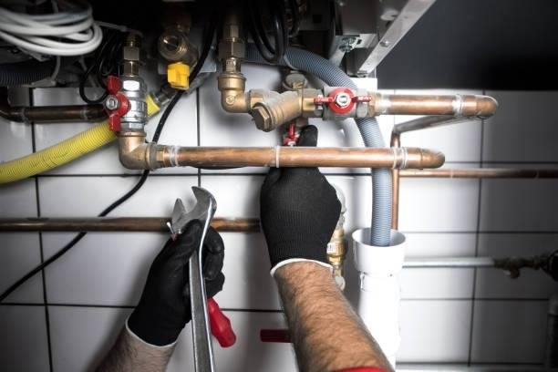
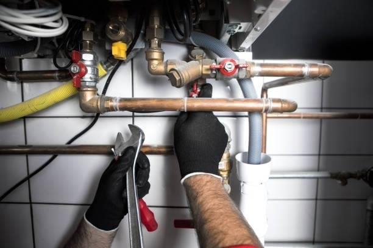
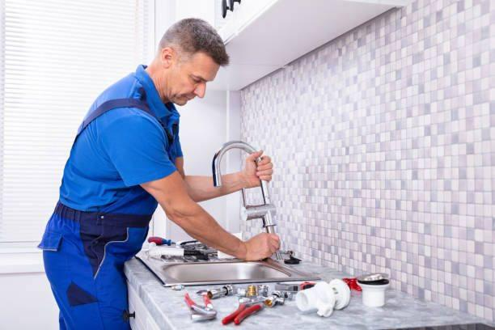
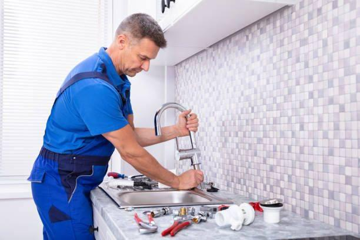

ABOUT US
ProPlumb Solutions" is a well-established plumbing company dedicated to providing top-tier plumbing services to residential, commercial, and industrial clients. With a commitment to excellence and a strong focus on customer satisfaction, ProPlumb Solutions has earned a stellar reputation in the plumbing industry.
Company Overview
1. Mission and Values: ProPlumb Solutions is driven by a mission to deliver high-quality plumbing solutions while upholding core values of professionalism, integrity, and exceptional customer service. The company is committed to ensuring the safety and functionality of plumbing systems in homes and businesses.
2. Expertise: ProPlumb Solutions boasts a team of highly skilled and licensed plumbers who are experts in various aspects of the plumbing industry. Whether it's routine maintenance, emergency repairs, or complex installations, their team is well-equipped to handle any plumbing challenge.
Our dedication to providing high-quality plumbing solutions, combined with our cutting-edge technology and environmentally responsible practices, positions us as a premier choice for plumbing needs in our service area.
 

 
